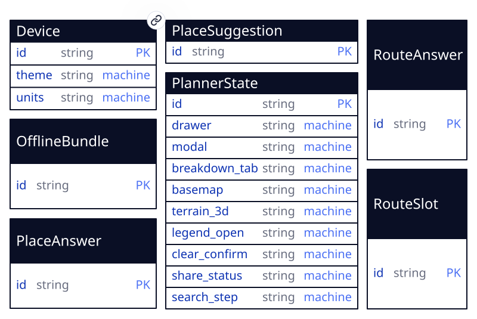

App entity neighbourhood · 7 entities

entities: Device, OfflineBundle, PlaceAnswer, PlaceSuggestion, PlannerState, RouteAnswer, RouteSlot
Compiled from journal.html#initial-brief by the studio team, onto the mecha cluster, the omnishell terminal, the sayt loop, and the bayt build graph · design tokens: DESIGN.md.
Gabi's Router is an offline-capable bicycle route planner built on the Rust port of
BRouter (brouter-rs + route-tools + rsrouter-wasm)
compiled to WebAssembly, MapLibre GL 5.24.0, and Pronto Cortex statecharts. Device-durable
preferences (Device) persist theme and unit system across tabs, while
in-tab route planning state (PlannerState), three simultaneous profile
comparison slots (RouteSlot), memoized routing answers (RouteAnswer),
memoized geocoding answers (PlaceAnswer, PlaceSuggestion), and
regional tile packs (OfflineBundle) drive the workbench.
| 1 | id | string | pk | this == 'device' |
| 2 | theme | string | machine | this in ['auto', 'light', 'dark'] |
| 3 | units | string | machine | this in ['metric', 'imperial'] |
the first column is the field's ordinal, which a diff keys on · pk primary key · → references · ◇ unique · ≡ indexed · ○ nullable · a rule or default in the last column
created_by, updated_by → app_user, stamped by the platform on every write; not the author’s.
Reader preferences persisted on the device across tabs: color theme and measurement units.
| Field | Type | Constraint |
|---|---|---|
| id | string | this == 'device' |
| theme | string | this in ['auto', 'light', 'dark'] |
| units | string | this in ['metric', 'imperial'] |
entities: Device, OfflineBundle, PlaceAnswer, PlaceSuggestion, PlannerState, RouteAnswer, RouteSlot

Host-DOM hatch gpx-io · delivery unspecified · Browser File input picker for .gpx upload, Blob anchor download for .gpx export, and navigator.clipboard URL copy
Trims and commits the search input into search_q when the reader submits a place query.
Folds a PlaceAnswer memo row from the geocoder unit into PlaceSuggestion rows s0..s4.
Folds a RouteAnswer memo row from the brouter Wasm unit into RouteSlot rows slot-0..slot-2, OfflineBundle rows, and PlannerState telemetry.
Processes map_action events raised by the router-map realm unit for waypoint additions/moves/deletions, avoid zones, and road segment tag inspection.
Handles preset routes, reverse, round-trip loop, slot selection, profile/alternative switching, custom .brf compilation, GPX import, and offline regional bundles.
Runs brouter-rs + route-tools compiled to WebAssembly in an off-thread worker agent with 10 embedded .brf profiles, lookups.dat, IndexedDB .rd5 tile caching, and GPX map-matching.
Memoized Nominatim search and coordinate parser running in an off-thread worker with a Web Locks 1100ms rate limit and offline landmark catalog.
Sandboxed iframe realm unit running MapLibre GL 5.24.0 with 4 basemaps, 3D terrain pitch, multi-slot route polylines, elevation hover dot, draggable waypoints, avoid circles, and right-click context menu.
Host-DOM hatch for browser .gpx file upload picker, .gpx Blob anchor download, and clipboard link copy.
brouter-rs + route-tools) is compiled to WebAssembly and runs inside an isolation: "agent" worker unit memoized into RouteAnswer by request_key, keeping multi-slot graph search and .rd5 decompression off the main thread.isolation: "realm" iframe unit (router-map) because WebGL2 tile workers require blob worker instantiation prohibited by the host document's Trusted Types policy; all map interactions cross the seat as typed map_action events.routerRows.host-dom escape hatch is declared (gpx-io) solely for browser <input type="file"> GPX picking, Blob anchor download, and navigator.clipboard copy; elevation charts and telemetry breakdowns are rendered by pure Jessie formatters with zero DOM hatches.Clicking two or more points on the map or loading a preset computes a bicycle route via the brouter WebAssembly engine and displays distance, duration, ascent, descent, and energy.
Searching for a place via Nominatim geocoding or editing waypoints adds, reverses, loops, or clears waypoints while keeping the route synchronized.
Up to three routing slots compare distinct cycling profiles and alternative routes simultaneously.
The bottom analytics dock renders a pure Jessie slope-colored SVG elevation profile with hover scrubbing and stacked breakdown bars across all 6 tabs.
The custom .brf studio compiles custom cycling preferences into a live .brf profile and re-routes the active slot.
Avoid areas can be added, resized, and cleared, and routes can be imported, exported as .gpx, or shared via URL.
Regional .rd5 routing bundles can be downloaded/removed for offline routing, and right-clicking a road inspects its .rd5 tags.
Cortex row statecharts drive theme, unit system, drawer state, basemap style, 3D terrain, map legend, modals, and timed confirmations.
Verdict: signed.
Browser-only durability (device and tab) with memoized agent worker tables (RouteAnswer, PlaceAnswer) and zero server overhead.
Verdict: signed.
Pure Cortex row statecharts (routerRows) and pure Jessie SVG/HTML renderers for elevation and surface breakdowns.
Verdict: signed.
Original gabis-router / surita.dev indigo-violet cartographic workbench visual identity with glassmorphic floating panels and full light/dark parity.
Verdict: signed.
Immediate London default route on boot, 3-slot comparison, two-tap clear confirmation, and synchronized elevation scrub.
Verdict: signed.
Every acceptance criterion (#accept-route through #accept-cortex-ui) mapped to unit and browser verification.